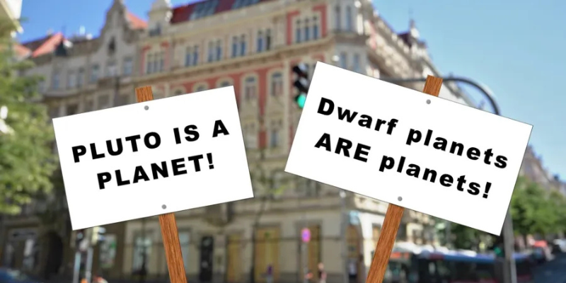

O planeta que deixou de ser planeta
Provavelmente você sabe que Plutão já foi considerado o nono planeta do Sistema Solar. Mas talvez você não saiba que sua reclassificação gerou muita discussão no mundo da astronomia. Acompanhe esse artigo para entender melhor essa história fascinante.
A descoberta de Plutão
Plutão foi descoberto em 1930 por Clyde Tombaugh, um astrônomo americano. Na época, os cientistas buscavam por um "Planeta X" que explicasse algumas anomalias na órbita de Netuno. Foi então que, ao analisar fotografias do céu noturno, Tombaugh identificou o pequeno corpo celeste.
A descoberta causou alvoroço e Plutão foi imediatamente considerado o nono planeta do Sistema Solar, apesar de seu tamanho bastante reduzido em comparação com os outros.
A polêmica da reclassificação
Com o avanço das tecnologias e o lançamento de telescópios mais potentes, outros corpos celestes semelhantes a Plutão começaram a ser descobertos na mesma região do espaço. Isso levou a União Astronômica Internacional (IAU) a repensar a definição do que é um planeta.
Em 2006, a IAU definiu que um planeta deve:
- Estar em órbita ao redor do Sol;
- Ter massa suficiente para ser esférico;
- Ter "limpado" sua órbita de outros objetos.
Plutão não cumpria o terceiro requisito, pois sua órbita é compartilhada com outros objetos do Cinturão de Kuiper. Assim, foi reclassificado como planeta anão. Gerando assim, diversas discussões
A comoção pública
A mudança de status de Plutão gerou diversas reações emocionais. Muitas pessoas, especialmente nos Estados Unidos, onde Plutão foi descoberto, protestaram contra a decisão. Surgiram campanhas, camisetas e até petições para que ele fosse reintegrado como planeta.
Então é isso! Espero que você tenha gostado do nosso artigo com essa curiosidade sobre o universo e a história do misterioso Plutão.